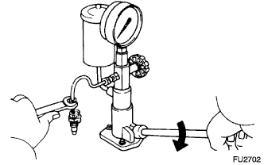
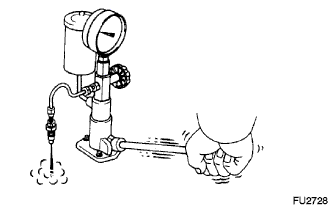
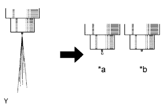
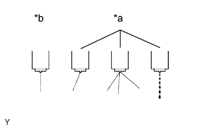
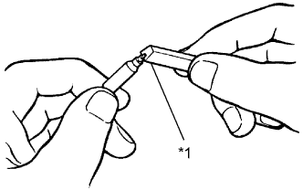
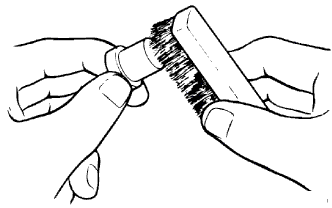
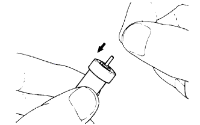

ТОПЛИВНАЯ ФОРСУНКА > ПРОВЕРКА |
| 1. INSPECT NOZZLE HOLDER AND NOZZLE SET |
Pressure test:
|  |
Install the nozzle holder to an injection nozzle hand tester and bleed air from the union nut connection.
|  |
Pump the tester handle a few times as fast as possible to discharge the carbon from the injection hole.
Pump the tester handle slowly and observe the pressure gauge.
Read the pressure gauge just as the injection pressure begins to drop.
| Specified Condition | ||
| 0.900 mm (0.0354 in.) | 1.300 mm (0.0512 in.) | 1.700 mm (0.0669 in.) |
| 0.950 mm (0.0374 in.) | 1.350 mm (0.0531 in.) | 1.750 mm (0.0709 in.) |
| 1.000 mm (0.0394 in.) | 1.400 mm (0.0551 in.) | 1.800 mm (0.0728 in.) |
| 1.050 mm (0.0413 in.) | 1.450 mm (0.0571 in.) | 1.850 mm (0.0728 in.) |
| 1.100 mm (0.0433 in.) | 1.500 mm (0.0591 in.) | 1.900 mm (0.0748 in.) |
| 1.150 mm (0.0453 in.) | 1.550 mm (0.0610 in.) | 1.950 mm (0.0768 in.) |
| 1.200 mm (0.0472 in.) | 1.600 mm (0.0630 in.) | - |
| 1.250 mm (0.0492 in.) | 1.650 mm (0.0650 in.) | - |
|  |
Leakage test:
While maintaining pressure at approximately 981 to 1961 kPa (10.0 to 20.0 kgf/cm2, 142 to 284 psi) below the injection pressure (adjust using the tester handle), check that there is no dripping from the injection hole or around the retaining nut for 10 seconds.
| *a | No Good |
| *b | Good |
|  |
Spray pattern test:
The injection nozzle should shudder at a certain pumping speed between 30 and 60 times per minute.
Check the spray pattern during shuddering.
| *a | No Good |
| *b | Good |
| 2. CLEAN NOZZLE ASSEMBLY |
|  |
Using a wooden stick and brass brush, clean the nozzle.
Using a wooden stick, remove the carbon adhering to the nozzle needle tip.
| *1 | Wooden Stick |
|  |
Using a brass brush, remove the carbon from the exterior of the nozzle body (except lapped surface).
| 3. INSPECT NOZZLE ASSEMBLY |
Wash the nozzle in clean diesel fuel.
|  |
Perform the following test several times, rotating the needle slightly each time.
Tilt the nozzle body approximately 60° and pull the needle out approximately one third of its length.
Check that the needle falls into the body vent smoothly by its own weight when released.
If the needle does not fall smoothly, replace the nozzle assembly.